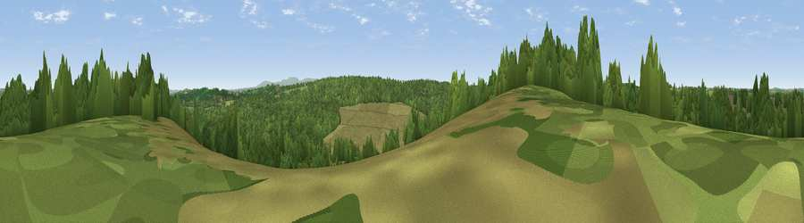

Viewpoint near Cookbury
#36732 in England · top 86% of its area beats it · near Cookbury · access?Where it is
The exact computed spot (SS 41675 03775). Click the marker for map links.
Public access: no public right of way or access land is recorded at this exact spot — it may be on private land. Computed from Natural England's CRoW access layer and OpenStreetMap rights of way — not the legal definitive map. Always verify locally.
The view, rendered

A 360° render of this exact spot computed from the terrain model, tree cover and land cover — summer colours, afternoon light, calibrated against photographs of famous viewpoints. Real trees, hedges and buildings will differ in detail.
The panorama
Grey silhouette: terrain skyline in each direction (720 bearings, Earth curvature and refraction included). Dashed green: skyline with trees (+15 m) and buildings (+8 m) as obstacles. Blue strip: how far the ground is visible on each bearing.
Where the view opens
Wedge length = distance to the farthest visible ground on that bearing (vegetation-aware). Rings at 10, 25 and 50 km.
What fills the view
53% grassland · 45% woodland · 2% cropland
Angular shares of the visible panorama (visual magnitude), not map area. Landscape diversity 0.34 (0–1 Shannon).
Key numbers
More beautiful places nearby
The staircase of upgrades: each row has a higher view potential than everything closer. Driving times are estimates from straight-line distance, calibrated against real road routing — check an actual route before setting out.
| Place | Direction | Drive | Score |
|---|---|---|---|
| Viewpoint near Cookbury | WSW · 0 km | ~2 min | 45.0 |
| Viewpoint near Hollacombe | W · 3 km | ~7 min | 60.3 |
| Viewpoint near Petrockstowe | NE · 9 km | ~18 min | 65.5 |
| Viewpoint near Whitstone | WSW · 16 km | ~29 min | 69.4 |
| Sourton Tors | SE · 19 km | ~32 min | 74.8 |
| Viewpoint near Sourton | SE · 20 km | ~34 min | 75.7 |
| Viewpoint near Bucks Mills | NNW · 20 km | ~34 min | 84.0 |
| Viewpoint near Crackington Haven | WSW · 30 km | ~47 min | 88.1 |
50.81183, -4.24866 · source: screening · position refined by local search. Computed location — check access rights before visiting.